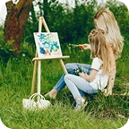

Unleash Your Creativity in Nature's Embrace
Join us for an inspiring plein air drawing workshop where art meets nature. Experience the joy of sketching outdoors while enhancing your skills in light and composition.
Reconnect with yourself through the art of outdoor drawing
-

Relieves stress and anxiety
Drawing in nature helps you unwind, clear your mind, and escape daily worries in a peaceful setting.
-
Sparks creativity
Whether you’re a beginner or experienced, plein air drawing encourages creative thinking and helps you see beauty in the details.
-

Quality time in nature
Plein air sessions combine fresh air, gentle movement, and mindful observation — a perfect blend of rest and inspiration.
Artistic Showcase
Explore the creativity captured in our workshops.


Explore Our Upcoming Workshop Schedule
Join us for immersive plein air drawing workshops. Experience nature while honing your artistic skills.
-
Morning Light Sketching
Central Park Meadow
09 Jun 8:00 am
Floral Focus: Painting Wildflowers
Riverside Botanical Trail
10 Jun 5:00 pm
Color & Composition Basics
Forest Edge Retreat
11 Jun 7:00 pm
Drawing Stillness: Meditative Sketching
Willow Grove Field
14 Jun 8:00 pm
Golden Hour Landscape Study
Sunset Ridge Hilltop
15 Jun 8:00 pm
Our team
Meet the passionate artists guiding your plein air journey.
-

Emma Caldwell
Lead Art Instructor
-
Lina Morales
Creative Workshop Coordinator
-

Owen Fischer
Materials & Techniques Expert
-
Naomi Lee
Mindfulness & Sketching Coach
-

Jack Turner
Photographer & Visual Archivist
-
Ben Novak
Outdoor Logistics Manager
Customer testimonials
-

“An unforgettable way to reconnect with nature and creativity. I came home with a full sketchbook and a peaceful mind.”
Julia Nguyen
-

“WildSketch helped me rediscover my love for drawing. The instructors were kind, encouraging, and deeply inspiring.”
Mark Leblanc
-
“Beautiful locations, great energy, and a supportive community. I’m not a professional artist, but I felt totally welcomed.”
Sofia Mendes
-
“Sketching outdoors in the golden hour was magical. Highly recommend for anyone looking to slow down and create.”
Daniel Ortiz
-
“Beautiful locations, great energy, and a supportive community. I’m not a professional artist, but I felt totally welcomed.”
Anika Shah
Register